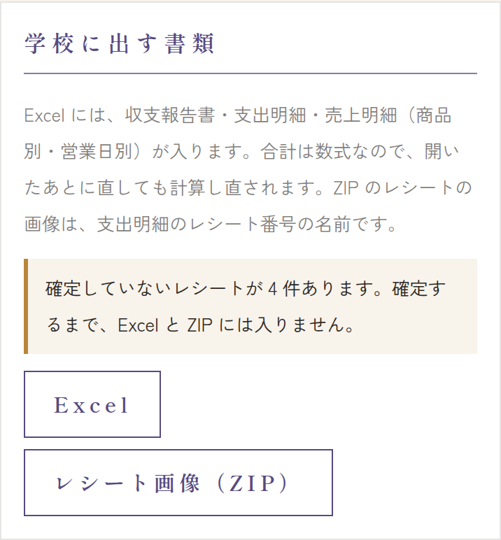

収支の画面のいちばん下の「学校に出す書類」から、収支報告の Excel と レシートの画像（ZIP）をダウンロードできます。どちらも本番の開催回をすべて合わせたもので、練習の開催回は入りません。


提出までの流れ
- レシートをぜんぶ確定する: 「確定していないレシートが ○ 件あります。」と出ていたら、先に確定します。確定していないレシートは、Excel にも ZIP にも入りません（→ 照合チェック）。
- 手入力の支出を確かめる: レシートと二重になっている手入力の支出がないか確かめます（同じく照合チェック）。
- 収支報告を確かめる: 収支の画面の収支報告と科目別の内訳を見て、おかしな数字がないか確かめます（→ 収支の画面）。
- Excel を押して、収支報告のファイル（
収支報告_開催名.xlsx）を保存します。 - レシート画像（ZIP） を押して、レシートの画像をまとめたファイル（
レシート_開催名.zip）を保存します。 - Excel を開いて中身を確かめ、学校・運営の指示に従って提出します（提出のしかた・締め切りは、学校・運営の指示を見てください）。
ファイルを作るのに少し時間がかかることがあります。ボタンが「作っています…」の間は待ってください。
Excel の中身
| シート | 内容 |
|---|---|
| 収支報告書 | 提出用の表。収入・支出の科目ごとの金額、合計、差引。 |
| 支出明細 | 支出1件ずつ（購入日・購入先・品目・科目・金額・レシート番号）。税率ごとに分けたレシートは、行が分かれます。 |
| 売上明細 | 商品別・営業日別の売上。商品の金額は商品ごとの値引きを引いたあとで、注文全体の値引きがあったときは「注文全体の値引き」の行で引きます（合計は実際に受け取った金額になります）。 |
| 分析 | 時間帯別の売上、商品別の割合、待ち時間、ロス、売り切れの記録、値引き（定価ベースの売上・値引き総額・実売上と値引きごとの件数・金額）、限定商品（限定数・販売数・失敗/廃棄）など（売上の画面とほぼ同じ内容）。 |
- 合計・差引は数式になっているので、Excel で数字を直すと計算し直されます。ただし、Excel で直してもシステムの収支は変わりません。直すときはシステムの収支を直して、ダウンロードし直すのがおすすめです。
- Excel・LibreOffice・Google スプレッドシートで開けます。
ZIP（レシートの画像）の中身
確定したレシートの画像が、R-0012_2026-10-11_店名.jpg のような名前で入っています。名前の最初のレシート番号は、Excel の支出明細のレシート番号と同じです。税率ごとに分けたレシートも、画像は1枚です。
レシートの原本（紙）の扱いは、学校・運営の指示に従ってください。